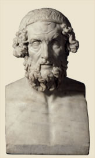

Homer and Hesiod activeHomer was a bard - a poet who performed for an audience. He is believed to have written two of the earliest and greatest works of Greek literature, The Odyssey and The Iliad. Very little is known about Homer himself. However, his stories have been enjoyed by many over the centuries. Hesiod is one of the oldest known Greek poets. His most famous poems are the Theogony which tells the story of the gods, and Works and Days, which gives advice for living and working. 
Bust of Homer
|